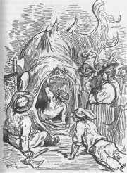

Goya: Květinářky

Goethův portrét od J.K.Stielera
|
PREROMANTISMUS
Pojem preromantismus začal prosazovat francouzský komparatista Paul van Tieghem (1871–1948) až v roce 1924. Označoval jím umělecké tendence, které ohlašovaly blížící se romantismus (předpona pre- znamená před). Přiřadil k němu autory, kteří byli dříve považováni za klasicisty nebo osvícence. V jejich tvorbě se ovšem projevuje zvýšený zájem o přírodu, city (sentimentalismus) nebo lidovou slovesnost (sběratelství, ohlasy). Jde především o francouzské spisovatele 2. poloviny 18. století jako Rousseau, Chateaubriand, Prévost a příslušníky německého hnutí Sturm und Drang. Protože je preromantismus dodatečně vytvořený pojem, žádný z uvedených autorů se k němu nemohl hlásit. Někteří odborníci ho proto nepoužívají a „preromantiky“ nadále řadí mezi klasicisty, osvícence nebo romantiky. Podobný problém nastal i v případě výtvarného umění. K preromantikům bývá řazen španělský dvorní portrétista Francisco de Goya (1746-1828), autor grafických cyklů Rozmary a Hrůzy války, nebo Švýcar Heinrich Füssli (1741-1825).

Goya: Poprava v La Moncloa 3.5.1808
|
Füssli: Tři čarodějnice
Füssli: Mlčení
Füssli: Noční můry
|
Johann Wolfgang Goethe (1749-1832)

Goethe [géte] byl největším německým spisovatelem i významným přírodovědcem. Pobýval ve Výmaru, kde řídil místní Dvorní divadlo a vykonával funkci ministra. Rád cestoval – Italská cesta a zajímal se o orientální kulturu – Západovýchodní díván. Byl rovněž nadaný herec a malíř. Věnoval se překladatelství. Napsal dramata Götz z Berlichingu, Ifigenie na Tauridě, Egmont, Torquato Tasso a Faust, básně Trilogie vášně, Král duchů a Čarodějův učeň, romány Utrpení mladého Werthera, Viléma Meistera léta učednická a Spřízněni volbou, obrovské množství dopisů a knihu vzpomínek Z mého života, Báseň a pravda. Za své zásluhy byl povýšen do šlechtického stavu.

Delacroix: Goethe
Co víš o Goethových pobytech v Čechách?
Kteří autoři rovněž zpracovali faustovské téma?
Kdo byl Torquato Tasso?
|
Johann Wolfgang Goethe:
Utrpení mladého Werthera
Román Utrpení mladého Werthera má formu dopisů a deníkových záznamů. Titulní postava se v nich vyznává ze svých pocitů nebo názorů a líčí přátelům různé osobní problémy. Werther své ztroskotání v zaměstnání, společnosti i milostném životě nakonec řeší sebevraždou.
Kniha byla velmi populární a vyvolala vlnu skutečných sebevražd z nešťastné lásky!
Johann Wolfgang Goethe: Faust
Rozsáhlé drama Faust (2 díly, 12 000 veršů) psal Goethe prakticky celý život. Učenec Faust uzavře smlouvu s ďáblem Mefistofelem, který mu musí splnit všechna přání. Jakmile Faust dosáhne plného uspokojení, propadne jeho duše peklu. Faust omládne, účastní se pitek a rejů Valpuržiny noci, zamiluje do Markétky, která má být popravena, protože utopila jejich dítě. Druhý díl se odehrává ve starověkém Řecku. Faust získá krásnou Helenu, ale stále není spokojen. Nakonec je jeho duše spasena, protože zúrodnil bažinaté pobřeží a rozhodl se nezištně pomáhat ostatním lidem.

Tischbein: Goethe v Kampánii
|
Sturm und Drang
Příslušníci hnutí Sturm und Drang (Bouře a vzdor) odmítali osvícenský racionalismus a po vzoru Rousseaua kladli důraz na přirozenost a cit. Zprvu podporovali Velkou francouzskou revoluci, ale když začaly umírat tisíce lidí pod gilotinou, svůj názor změnili. Později se přizpůsobili dobovým konvencím, někteří byli dokonce povýšeni do šlechtického stavu... Vůdčí osobností hnutí byl filozof Johann Gottfried Herder (1744-1803), autor sbírky lidové slovesnosti Hlasy národů v písních a pojednání Myšlenky k filozofii dějin lidstva, ve kterém zdůrazňoval význam „ducha lidu“ a „génia národa“. Další členové hnutí –
Goethe, Schiller a Bürger se proslavili jako literáti.
Ilustrace k Faustovi od francouzského romantického malíře Delacroixe

Je sebevražda (Werther) nebo vražda (Markétka) správným řešením bezvýchodné situace?
Znáš někoho, kdo nezištně pomáhá ostatním?
Pomáháš někomu ty?
Dostaneš se po smrti do nebe nebo do pekla? Nebo někam jinam? Kam a proč?
|
Friedrich Schiller (1759-1805)

Schiller [šiler] chtěl studovat teologii, ale na rozkaz württenberského vévody musel absolvovat vojenskou akademii a později se stal vojenským lékařem jako jeho otec. Za návštěvu premiéry svých Loupežníků byl vévodou uvězněn a další literární tvorba mu byla zakázána! Naštěstí se mu podařilo uprchnout. Spřátelil se s Goethem a zbytek života strávil ve Výmaru. Je autorem divadelních her Loupežníci, Don Carlos, Valdštejn, Marie Stuartovna, Panna Orleánská, Vilém Tell, Úklady a láska a ódy Na radost. Prý psal pod pseudonymem pochvalné recenze na vlastní díla a v zásuvce stolu schovával shnilá jablka, jejichž pach ho inspiroval k největším dílům...
|
Friedrich Schiller: Loupežníci
Drama Loupežníci zpracovává námět, který si později velmi oblíbili romantici. Hlavní postavou je šlechtic Karel Moor, který se vydá na dráhu loupežníka. Jeho bratr Franz ho totiž falešnými intrikami připravil o dědictví a usiluje i o jeho milou Amálii. Karel se stane vůdcem loupežníků a odchází do Čech. Když se rozhodne dobýt svůj majetek zpět, nachází otce v hladomorně, do které ho uvrhl Franz. Příběh končí tragicky – Franz se ze strachu před odplatou uškrtí a jeho otec umírá. Karel chce zůstat s Amálií, ale to mu ostatní loupežníci nedovolí. Proto ji raději zbaví života a dobrovolně se odevzdává do rukou spravedlnosti.
Friedrich Schiller: Na radost
Schillerova óda Na radost je známá především díky Beethovenově zhudebnění. (Devátá symfonie se dokonce stala hymnou Evropské unie.) Původně šlo o ódu na svobodu.
|

Goya: Hrůzy války č. 39 (Krásný hrdinský čin... S mrtvolami!)

Goya: Disparate č. 13
Goya: Rozmary č. 43 (Spánek rozumu rodí příšery)
|
Gottfried August Bürger
(1747-1794)
Příběhy barona Prášila vyšly v Německu v roce 1781 bez uvedení autora. Brzy byly přeloženy do angličtiny, odkud je Bürger volně přeložil do německého jazyka. Jeho zpracování je mnohem kvalitnější než původní vydání. Bürger je rovněž autorem balady Lenora.
Je Prášil lhář nebo fantasta?
Měl by člověk vždycky mluvit pravdu? Proč?
Může být lhaní užitečné? Kdy?
O kom se říká, že práší? Kdo bájí? A kdo básní?
|
Gottfried August Bürger: Baron Prášil
Kniha je sledem fantastických historek, které vypravuje baron Prášil. Přestože se nemohly nikdy stát, baron své posluchače neustále přesvědčuje, že je vše naprostá pravda a že si nic nevymyslel. Jeho představivost jako by ani neznala mezí.
|

Baron Prášil od francouzského romantického ilustrátora Gustava Doré (1823-1883)
|
Jean-Jacques Rousseau (1712-1778)
Francouzský filozof Jean-Jacques Rousseau [žan žak ruso] vedl neuspořádaný život. Byl tulákem, lokajem či regenschorim. Za zveřejněné názory mu hrozilo zatčení, a proto uprchl do Anglie a rodného Švýcarska. I zde nachází samé nepřátele, přestože znovu konvertoval k protestantství. Napsal několik hesel do Diderotovy Encyklopedie, je autorem pojednání Přispěl pokrok ve vědách a umění k čistotě mravů?, Rozprava o původu nerovnosti mezi lidmi a Rozprava o společenské smlouvě, románů Emil neboli O výchově a Julie aneb Nová Heloisa a úvah Vyznání, Rozmluvy a Dumy samotářského chodce. Na sklonku života začal trpět chorobnou podezíravostí.
|
Jean-Jacques Rousseau:
Emil neboli O výchově
Rousseau popsal v románu Emil neboli O výchově svoje pedagogické názory. V nejútlejším věku by měli dítě vychovávat rodiče, což nebylo ve vyšší společnosti zvykem (sám Rousseau dal svých pět dětí do nalezince). Emil je ale sirotek. Je vychováván v souladu s přírodou, filozofie i náboženství mu záměrně zůstávají utajeny. Jediná kniha, kterou může číst, je Robinson Crusoe. Podobně je vychovávána i Emilova budoucí nevěsta Žofie, podle Rousseaua má být žena hlavně vzornou manželkou a matkou.
Tato kniha byla odsouzena k spálení a Rousseau s ní měl největší problémy ze všech svých děl.
|

Houdon: Rousseau
Jak si představuješ ideální výchovu?
Co si myslíš o rozporu mezi Rousseauovými názory a činy?
„Žádné jiné knihy než svět, žádného jiného vyučování nežli fakta. Dítě, které čte, nemyslí, čte jen; necvičí se; čte jenom slova.“ (Rouseau)
|
Antoine-François Prévost (1697-1763)
Francouzský spisovatel Prévost [prevo] vstoupil kvůli zklamání v lásce do benediktinského řádu (odtud přídomek abbé). Po útěku z opatství žil v exilu (Anglie, Nizozemí). Jeho Příběh rytíře des Grieux a Manon Lescaut byl původně součástí rozsáhlých Pamětí urozeného muže. Pro svou nemorálnost byl román odsouzen ke spálení na hranici.
|
abbé Prévost: Příběh rytíře des Grieux a Manon Lescaut
Prévostův román vypráví o nešťastné lásce rytíře des Grieux [degrije] k mladičké dívce Manon Lescaut [lesko], která se má stát jeptiškou. Uprchnou spolu do Paříže, ale kvůli nedostatku peněz naváže Manon postupně známost s lichvářem, bohatým finančníkem i jeho synem a snaží se je okrást. Des Grieux by pro Manon udělal cokoliv. Osvobodí ji z polepšovny a následuje ji do vyhnanství v Americe. Při posledním pokusu o útěk Manon umírá.
V Čechách je příběh známý díky dramatizaci Vítězslava Nezvala, který ho zároveň přebásnil.
|

Dobová ilustrace k Prévostově románu
Sehrajte ukázku z Nezvalovy dramatizace.
Najdi v Prévostově románu pasáž, která posloužila Nezvalovi pro tuto scénu.
|
François-René de Chateaubriand (1768-1848)
Chateaubriand [šatobrjan] byl šlechtic. Během Velké francouzské revoluce emigroval s ostatními roajalisty do Anglie a Ameriky. Po návratu se stal francouzským ministrem zahraničí. Napsal
knihy Rozprava o revolucích a Duch křesťanství, jehož součástí jsou prózy Atala a René. O východních zemích pojednává jeho román Mučedníci a cestopis Cesta z Paříže do Jeruzaléma. Paměti ze záhrobí mohly vyjít až po autorově smrti.
Füssli: Samota za úsvitu
|
François-René de Chateaubriand: Atala aneb Láska indiánské dvojice v pustinách
Sentimentální novela Atala se odehrává v Americe. Indián z kmene Načezů Šakta vypravuje Renému (Francouz) příběh své nešťastné lásky ke křesťance Atale, kterou její matka zaslíbila Panně Marii. Atala miluje Šaktu, ale nechce porušit matčino přání a raději spáchá sebevraždu. Krátká próza je plná líčení divoké přírody a citů hlavních hrdinů.
Další autoři a díla
Percy: Památky staré anglické poezie
Macpherson: Básně Osianovy
Richardson: Pamela aneb Odměněná ctnost
|

Pohřeb Ataly od francouzského romantického malíře Girodeta-Triosona [žirode trjoson] (1767-1824)
|
Internetové stránky
Goethova společnost
Goethe, informace
Goethovo muzeum
Goethe Institut
Goethe
Goethe
Goethe a Schiller
Schiller
Bürger
Bürgerovo muzeum
Bürger: Baron Prášil
Rousseau
Rousseau
Rousseau
Goya, obrazy
Černoušek: Caprichos, článek
Exkurze
Výmar, Německo
Výmarský klasicismus
Filmy
Faust, režie F.W.Murnau (němý film)
Lekce Faust, režie J.Švankmajer
|
Doporučená četba
Bürger, Gottfried August: Baron Prášil, přel. J.Kolář, Academia, Praha 2000
Feuchtwanger, L.: Bláznova moudrost (román o Rousseauovi)
Friedenthal, Richard: Goethe, Jeho život a jeho doba, přel. R.Toman, Odeon, Praha 1973
Goethe, Johann Wolfgang: Faust, přel. O.Fischer, SNKLHU, Praha 1957
Goethe, J.W.: Spisy (7 svazků)
Goethe, J.W.: Utrpení mladého Werthera, přel. E.A.Saudek, Mladá fronta, Praha 1968
Goethe, J.W.: Z mého života, Báseň a pravda, Praha 1931
Goethe, Schiller: Korespondence, Praha 1975
Chateaubriand, François-René de: Atala, René, přel. O.Reindl, Odeon, Praha 1973
Nezval, Vítězslav: Manon Lescaut, Československý spisovatel, Praha 1954
Pokorný, J.: Kniha o Faustovi, Praha 1982
Prévost, Antoine-François: Manon Lescaut, přel. J.Votrubová-Koutecká, Odeon, Praha 1972
Rousseau, Jean-Jacques: Emil čili O vychování, přel. A.Krejcar, Bayer a Smutný, Přerov 1907
Rousseau, J.-J.: Rozpravy, přel. Blažková, Zamarovský, Svoboda, Praha 1978
Rousseau, J.-J.: Sny samotářského chodce, přel. E.Berková, K+D Svoboda, Praha 2002
Schiller, Friedrich: Loupežníci, Fiesco, Úklady a láska, Don Carlos, SNKLHU, Praha 1959
Schiller, F.: Valdštejn, Marie Stuartovna, Panna Orleánská
Schiller, F.: Nevěsta mesinská, Vilém Tell, Dimitrij, Poezie, SNKLHU, Praha 1963
|
Připrav si referát o některé z uvedených knih nebo internetových stránek.

Goya: Saturn
|
|